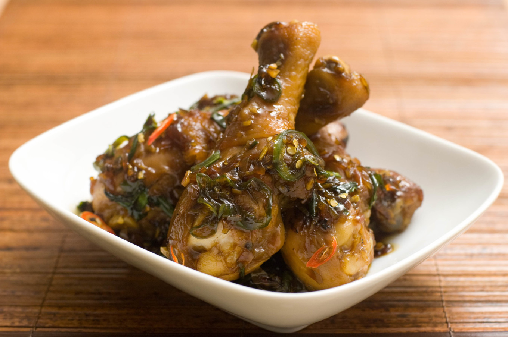

Ga Kho
(Content taken from here.)

Ga Kho
Gà kho is an aromatic, sweet, spicy, and pungent yet
balanced combination of flavors that pair amazingly
well with chicken. It’s quite easy to make too!
Whether it be fish steaks, poultry, beef, hunks of
pork, or sausage; everything has a version of the
caramelized cooking method. And why not?
Caramelization creates a delicious sauce that is
savory, sweet, spicy, salty, and thick enough to nicely
coat whichever meat you decide to cook.
Ingredients
- Marinade
- 2 tablespoos of fish sauce
- 1 tablespoon of brown sugar
- Meat
- 1.5lbs of chicken drumsticks
- Sauce
- 1/2 cup of brown sugar
- 1/4 cup of fish sauce
- 1/4 cup of rice vinegar
- 1/4 cup of water
- 1 tablespoon of ginger
- 1 shallot
- 3 cloves of garlic
- vegetable oil for frying
- Final Additions/Garnish
- 2 sprigs of scallion
- 1 jalapeno
- 1 Thai chili
Steps
- Marinade in about 2 tablespoons fish sauce and 1
tablespoons brown sugar for a least 1 hour. Rotate
and redistribute marinade after the first 30 minutes.
- Combine for the sauce: 1/2 cup brown sugar, 1/4 cup
fish sauce, 1/4 cup rice vinegar, 1/4 cup water.
- Then add to the sauce 1 tablespoon minced ginger,
1 minced shallot, and 3 cloves minced garlic.
- Heat a pan on high heat, then add some vegetable oil.
Add the chicken and rotate as it browns. This should
only take a 1-2 minutes.
- Turn down the heat to about medium so the chicken can
cook through.
- Add some of the sauce, just enough to color and kind of
baste the meat as it cooks.
- You could add the rest of the sauce now too, but I
find it makes more sense to cook them separately so you
can control the doneness of the chicken and thickness
of the sauce independently.
- Remove the chicken. Add the rest of the sauce and cook
on medium high heat until it just reaches desired
consistency.
- Remove the chicken. Add the rest of the sauce and cook
on medium high heat until it just reaches desired consistency.